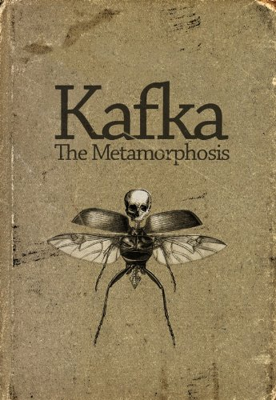
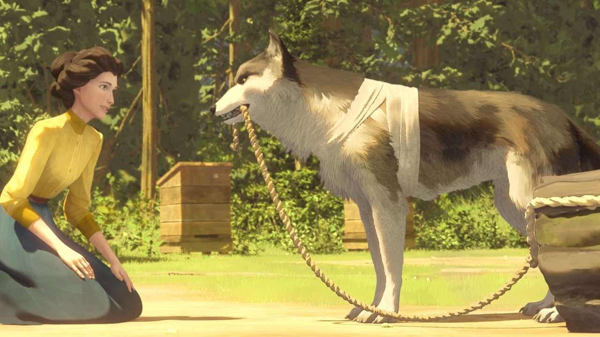

Frankz Kafka
@franz_kafka
· Jul 31
As Gregor Samsa awoke one morning from uneasy dreams he found himself transformed in his bed into a gigantic
insect. He was lying on his hard, as it were armor-plated, back and when he lifted his head a little he could
see his dome-like brown belly divided into stiff arched segments on top of which the bed quilt could hardly
keep in position and was about to slide off completely. His numerous legs, which were pitifully thin compared
to the rest of his bulk, waved helplessly before his eyes.

The Metamorphosis
As Gregor Samsa awoke one morning from uneasy dreams he found himself transformed in his bed into a gigantic
insect. He was lying on his hard, as it were armor-plated, back and when he lifted his head a little he could
see his dome-like brown belly divided into stiff arched segments on top of which the bed quilt could hardly
keep in position and was about to slide off completely. His numerous legs, which were pitifully thin compared
to the rest of his bulk, waved helplessly before his eyes.
,
Jack London
@jack_london
· Aug 21
Dark spruce forest frowned on either side of the frozen waterway. The trees had been stripped by a recent wind
of their white covering of frost, and they seemed to lean toward each other, black and ominous, in the fading
light. A vast silence reigned over the land. The land itself was a desolation, lifeless, without movement,
so lone and cold that the spirit of it was not even that of sadness. There was a hint in it of laughter,
but of a laughter more terrible than any sadness — a laughter that was mirthless as the smile of the Sphinx,
a laughter cold as the frost and partaking of the grimness of infallibility. It was the masterful and
incommunicable wisdom of eternity laughing at the futility of life and the effort of life. It was the Wild,
the savage, frozen-hearted Northland Wild.

White Fang
Dark spruce forest frowned on either side of the frozen waterway. The trees had been stripped by a recent wind
of their white covering of frost, and they seemed to lean toward each other, black and ominous, in the fading
light. A vast silence reigned over the land. The land itself was a desolation, lifeless, without movement,
so lone and cold that the spirit of it was not even that of sadness. There was a hint in it of laughter,
but of a laughter more terrible than any sadness — a laughter that was mirthless as the smile of the Sphinx,
a laughter cold as the frost and partaking of the grimness of infallibility. It was the masterful and
incommunicable wisdom of eternity laughing at the futility of life and the effort of life. It was the Wild,
the savage, frozen-hearted Northland Wild.